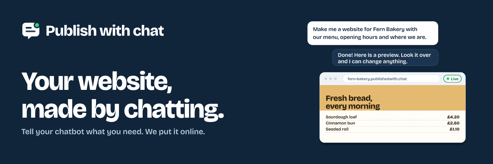

How Publish with chat looks and sounds. Short on purpose: if you are unsure, use the files in this pack and plain words.
People tell a chatbot what they want, and a real website goes live. The brand shows exactly that: a chat bubble with a small green live dot. Everything else stays calm, clear and friendly, because our customers are bakers, plumbers and barbers, not developers.
Three rules carry the whole look: ink navy for structure, one green that only ever means "do this" or "this is live", and plain words.
The logo is the chat-bubble mark with the name set beside or below it. The wordmark is drawn as outlines in Bricolage Grotesque, so always use the files rather than retyping the name.
Keep clear space around the logo equal to half the height of the mark. Do not go smaller than 24 pixels tall for the mark, or 120 pixels wide for the horizontal lockup. Below that, use the mark alone.
#10253A#0E7A45#2BD27F#F1F5F9#D8E1EA#4F6479| Combination | Contrast | Use |
|---|---|---|
| Ink on white | 15.6 : 1 | Body text |
| Muted on white | 6.1 : 1 | Secondary text |
| White on action green | 5.4 : 1 | Buttons |
| Live green on ink | 7.9 : 1 | The dot on dark, small status text on dark |
| Live green on white | 2.0 : 1 | Fails for text. Use only as a dot with a ring |
The website and app switch to a dark version automatically: page #0B1A29, panels #112437, buttons #2BD27F with dark text.
Your website, made by chatting.
| Role | Font | Notes |
|---|---|---|
| Headings, logo, numbers | Bricolage Grotesque, 700 and 800 | Tight spacing (about -3%). Sentence case. Self-hosted: brand/bricolage-grotesque-latin.woff2. Open Font License. |
| Everything else | The reader's own system font | Fast and familiar. 17 px body text, line length under 70 characters. |
No all-caps labels and no decorative headline tricks. Write headings the way you would say them.
Write for someone who has never built a website. Short sentences, everyday words, one job per sentence. Say what happens when someone presses a button, and use the same word for the same thing everywhere.
Say what happened and what to do next, in the product's own voice. Never blame the person. "We could not send the link. Check the address and try again." beats "Something went wrong."
Say plainly that previews are free and you can cancel any time. For the current price, link to the pricing page rather than quoting it, so it never goes out of date.
One green button per screen: the thing we want the person to do next. Everything else is a plain outlined button.
Get started See how it works Live
The live pill always has the green dot. "Not online yet" and "Ending soon" use the amber outline, and "Offline" and "Taken offline" use red.
Every image is provided as SVG (sharp at any size, text already outlined) and PNG, in a dark (ink) and light (mist) version. They all use the same picture: a chat asking for a bakery site, and the live site beside it.

| Use | Size | File |
|---|---|---|
| Link preview (Open Graph, X, LinkedIn, Slack) | 1200 x 630 | social/og-share-1200x630.png |
| X (Twitter) header | 1500 x 500 | banners/x-header-1500x500.png |
| LinkedIn company banner | 1584 x 396 | banners/linkedin-banner-1584x396.png |
| Facebook cover | 820 x 312 | banners/facebook-cover-820x312.png |
| YouTube channel banner | 2560 x 1440, content inside the central 1546 x 423 | banners/youtube-2560x1440.png |
| Email header | 1200 x 300 | banners/email-header-1200x300.png |
| Square post (Instagram, LinkedIn) | 1080 x 1080 | social/post-square-1080.png |
| Profile picture, any network | 800 x 800 | social/avatar-dark-800.png, avatar-light-800.png |
| Use | File |
|---|---|
| Favicon | icons/favicon-16.png, favicon-32.png, favicon-48.png, and the adaptive ../favicon.svg |
| iPhone home screen | icons/apple-touch-icon.png (180) |
| Android and web app | icons/android-chrome-192.png, android-chrome-512.png, app-icon-maskable-512.png |
| Claude, Google and other directories | icons/directory-icon-512.png (white background, 512 x 512) |
| Store listings and large uses | icons/app-icon-1024.png |